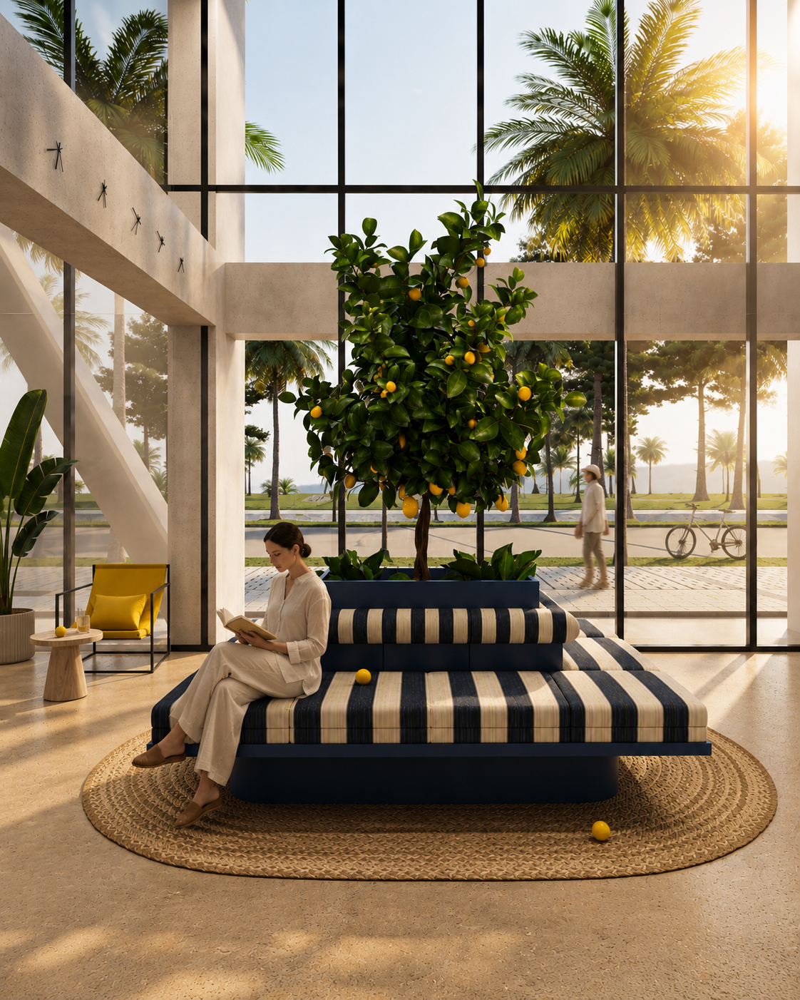
Boutique Hotel Concept
RENE
- Year
- 2024
- Location
- Batumi, Georgia
- Type
- Boutique Hotel Concept
RENE is a boutique hospitality concept in Batumi, Georgia, exploring how one architectural language can create multiple emotional experiences through color, light, and atmosphere.
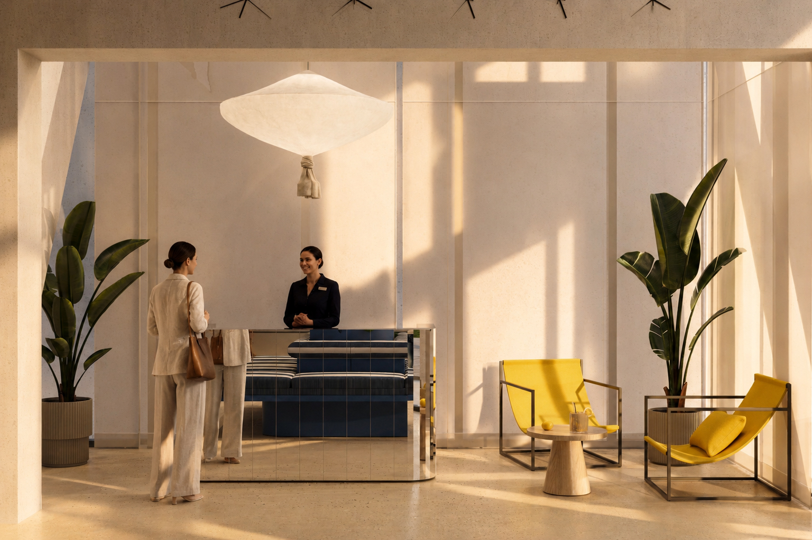
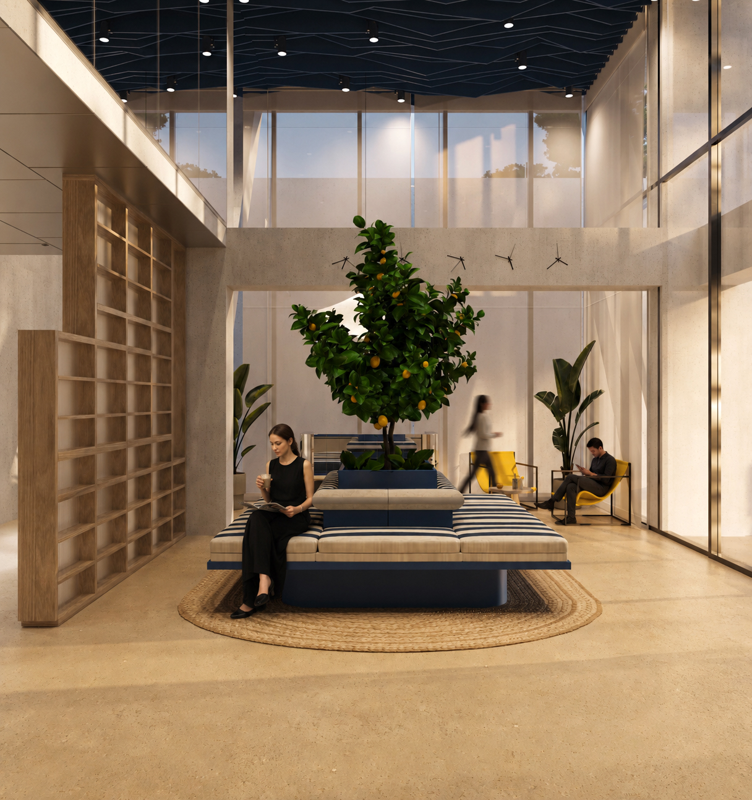
Olive Room
Soft green tones, walnut wood, and red accents create a calm Mediterranean atmosphere.
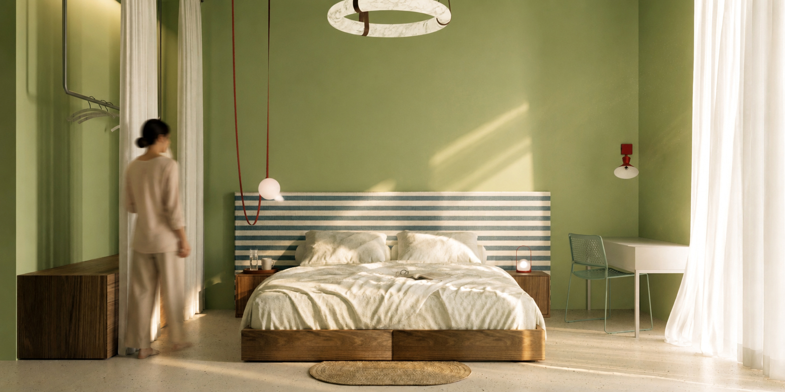
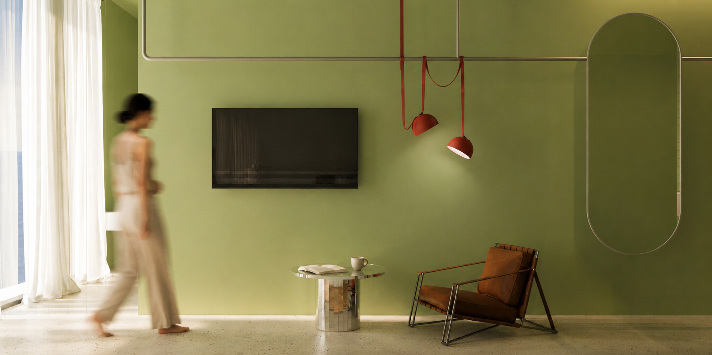
Sea Room
Blue accents reflect the Black Sea and Batumi's coastal atmosphere.
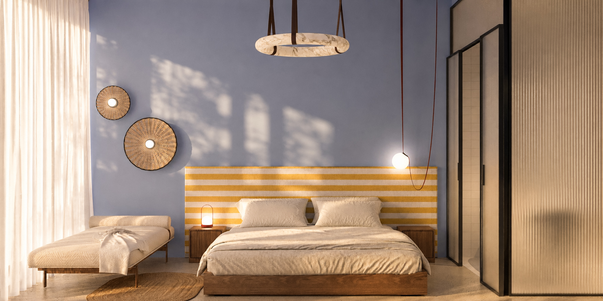
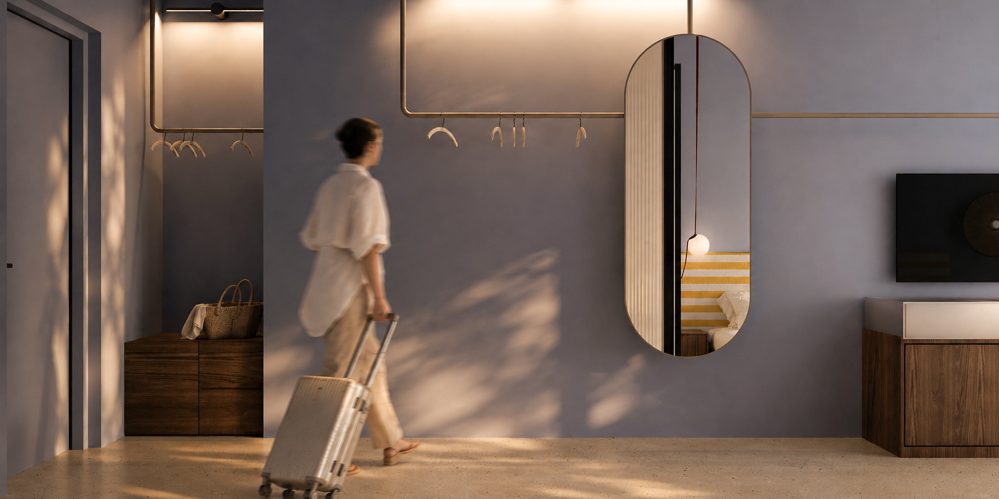
Sun Room
Yellow stripes and warm white surfaces bring a summer holiday feeling into the room.
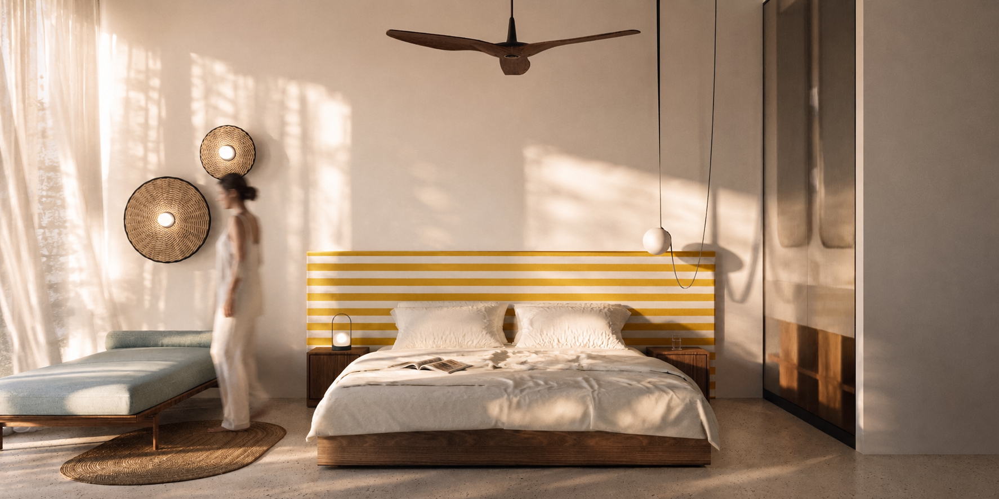
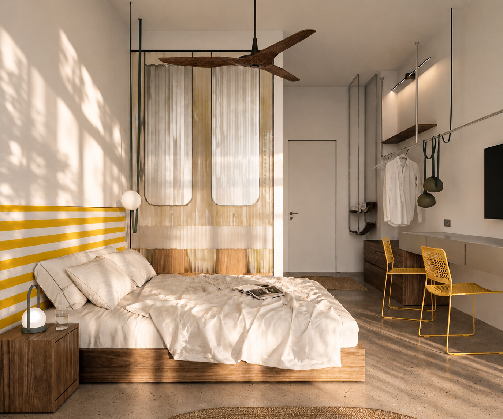
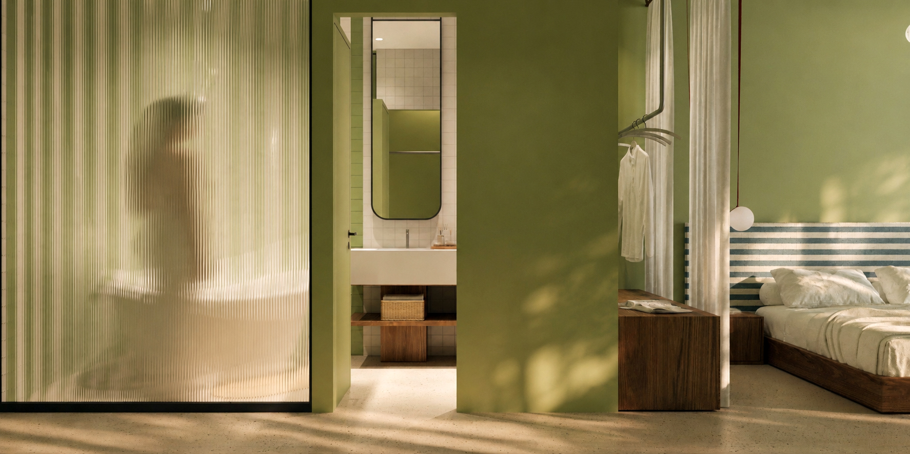
Bathrooms
Each bathroom continues the room identity while keeping a consistent architectural language.
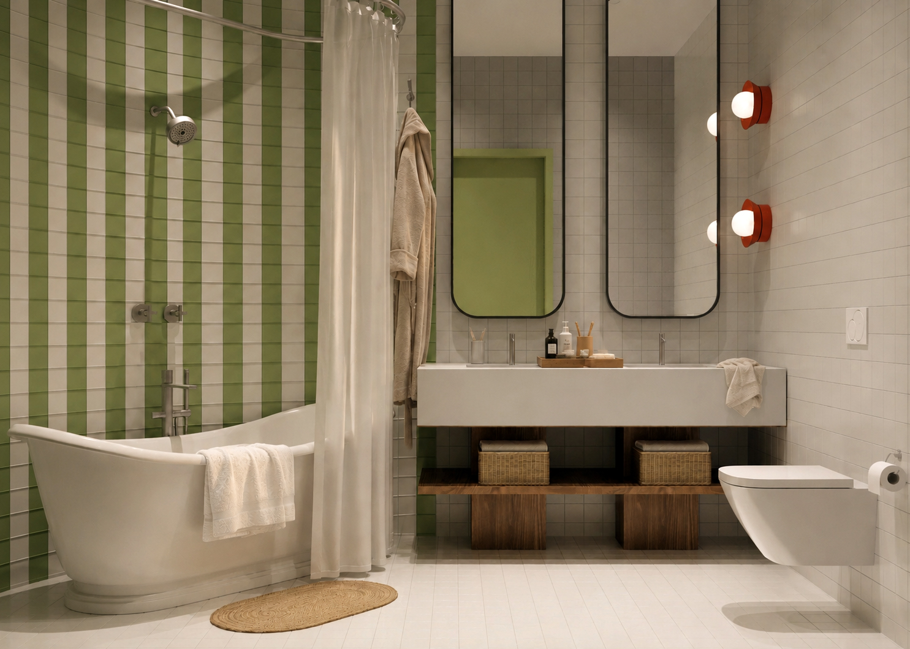
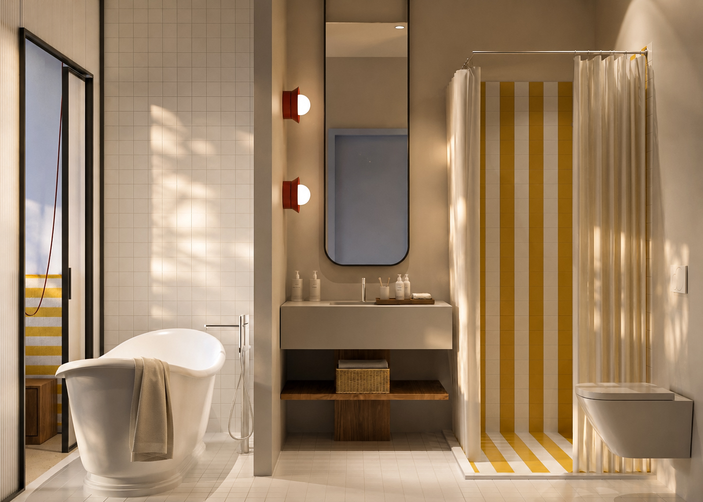
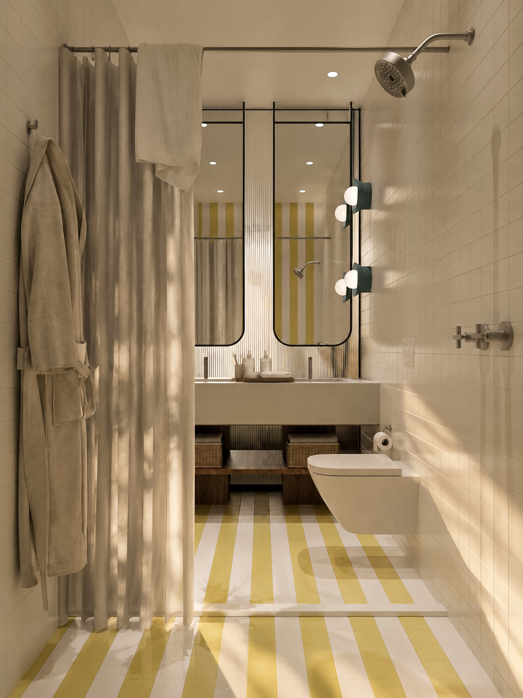